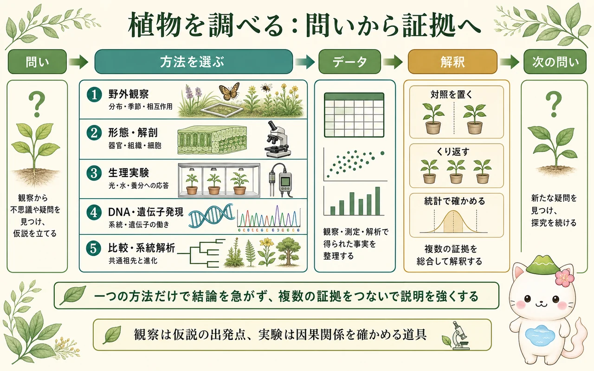

植物学は何を問う学問か
植物学は、「この植物の名前は何か」を知るためだけの学問ではありません。植物がどのような体をつくるか、光・水・養分をどう利用するか、花や種子をいつつくるか、どの系統から分かれたか、他の生物や環境をどう変えるかを扱います。分類、解剖、生理、発生、遺伝、進化、生態は別々の教科名に見えますが、実際には一つの植物を違う角度から見ています。
たとえば、乾燥地の植物の葉が小さいという観察からは、表面積、水分損失、気孔、細胞壁、遺伝子発現、祖先から受け継いだ形質、ほかの生物との関係まで問いが広がります。大学植物学では、一つの特徴を一つの原因で片付けず、どの階層の説明が必要かを見分けます。
7つの階層を行き来する
植物を理解するときは、分子・遺伝子、細胞、組織、器官、個体、個体群、群集・生態系という階層を行き来します。遺伝子は細胞の働きに関わり、細胞の並びは組織をつくり、組織は根・茎・葉・花という器官の働きを支えます。個体が増えたり減ったりすると個体群が変わり、複数の生物が関わる群集や生態系へつながります。
ただし、下位のしくみを知れば上位の現象をすべて説明できるわけではありません。葉の気孔一つの反応は重要ですが、森林全体の蒸散や植生の分布には、気候、土壌、種間関係、時間の積み重なりも関わります。反対に、生態系の環境は、個体の成長や細胞の状態に影響します。植物学では、この上下両方向のつながりを意識します。

5つの視点を重ねる
構造は、細胞壁、維管束、葉の形、花のつくりなど、「何がどこにあるか」を扱います。機能は、光合成、輸送、気孔開閉、成長など、「それがどう働くか」を扱います。発生は、受精卵や分裂組織から器官がどう形づくられるかを扱います。
進化は、形質や遺伝子が共通祖先からどう変化してきたかを、系統樹を用いて考えます。生態は、個体が環境や他の生物とどう関わるかを扱います。たとえば花の色は、花弁の細胞や色素という構造、送粉者との関係という生態、祖先からの変化という進化を重ねて初めて深く読めます。五つは競合する答えではなく、互いの説明の抜けを補う視点です。

「遺伝子があるからこうなる」と言いたくなったら、少し立ち止まろう。遺伝子の働きは、細胞の場所、発生段階、光や温度などの環境によって変わるよ。植物の形は、DNAだけで決まる一枚の設計図ではないんだ。
問いから証拠へ進む
研究は、気になる現象を観察し、「何が関係しているのだろう」と問いを立てるところから始まります。野外観察は、分布、季節変化、送粉や食害などを見つけるのに役立ちます。形態・解剖は、器官、組織、細胞のつくりを確かめます。生理実験は、光、水、養分などの条件を変えて反応を比べます。DNAや遺伝子発現の解析は、系統関係や細胞内で働く仕組みを調べます。
どの方法にも得意な問いと限界があります。観察で二つの事柄が同時に変わっていても、それだけで片方が原因だとは言えません。因果関係を確かめるには、比べる基準となる対照を置き、変える条件をできるだけ一つにし、くり返して測定します。得られた値のばらつきは統計で扱い、別の方法や別の研究結果とも照らします。結論は一枚の写真ではなく、複数の証拠の束で強くなります。

大学レベルの資料の読み方
大学レベルでは、用語を覚える前に、文や図が「何を比べたか」「どの階層の話か」「どこまでが観察で、どこからが解釈か」を区別して読みます。グラフでは、縦軸が何を測り、横軸がどの条件を変え、点や棒が何個の試料を表すかを確かめます。系統樹では、枝の並びではなく共通祖先と分岐を読みます。
また、教科書的な説明は多くの研究を整理した現在の理解であり、個別の研究論文は限られた条件で得た新しい証拠です。両者の役割は違います。まず教科書や総説で用語と全体像をつかみ、必要に応じて一次研究で方法・データ・限界を読むと、情報を過度に信じすぎず、かといって「何も確かなことはない」ともならずに学べます。
この冊子の要点
- 植物学は、構造・機能・発生・進化・生態をつなぎ、植物を多層的に説明する学問です。
- 分子から生態系までの各階層はつながりますが、上位の現象には環境や時間など追加の説明が必要です。
- 観察、解剖、生理実験、遺伝子解析、系統解析は、それぞれ異なる種類の証拠を与えます。
- 対照、反復、統計、複数の方法の照合が、説明の確かさを高めます。
参照資料
- OpenStax Biology 2e：The Plant Body
- OpenStax Biology 2e：Evolution of Seed Plants
- OpenStax Biology 2e：Community Ecology
- Taiz et al., Plant Physiology and Development, Oxford University Press.